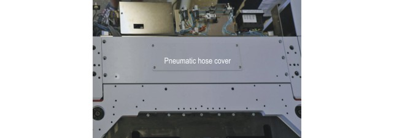
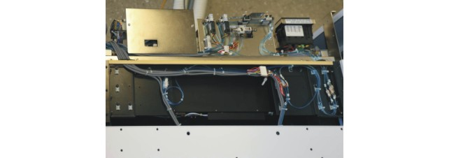

Connecting up Direct-Probe bridge beam on TEL Precio wafer prober
This topic tells you how to connect up the sensor cables and compressed air hoses between the Bridge Beam and TEL Precio wafer prober.
About this task
The WSRF Bridge Beam is fitted with four compressed air hoses for the control of the interface and four cables that provide sensor signals back to the wafer prober about the status of the Bridge Beam.
At the front end of the Bridge Beam (the end mounted closest to the SACC door on the prober) there are the following services:
- Sensor cable marked FRONT CLAMP
- Sensor cable marked FRONT UNCLAMP
- Compressed air hose marked FRONT CLAMP
- Compressed air hose marked FRONT UNCLAMP
At the rear end of the Bridge Beam (the end mounted away from the SACC door on the prober) there are the following services:
- Sensor cable marked REAR CLAMP
- Sensor cable marked REAR UNCLAMP
- Compressed air hose marked REAR CLAMP
- Compressed air hose marked REAR UNCLAMP
A set of extension cables is provided with the Bridge Beam. These cables connect between the cables from the Bridge Beam and those from the wafer prober.
The mapping of the connectors on the extension cables is as follows:
Bridge Beam end |
Wafer prober end |
|---|---|
FRONT CLAMP |
CN4054 |
FRONT UNCLAMP |
CN4055 |
REAR CLAMP |
CN4056 |
REAR UNCLAMP |
CN4057 |
Before you begin
Remove the large top cover at the back of the prober, fee the figure below. Exercise care, the cover is heavy.

Underneath the cover you will find sensor cables to the prober as well as compressed air hoses.

It is these cables and hoses that you will connect the cables and hoses from the Bridge Beam to in the procedure below.
Procedure
Results
You have completed the installation of compressed air hoses and sensor cables to the Bridge Beam.
What to do next
Move on to Loading a DUT board on the TEL Precio Wafer Prober.
Functional changes
- Introduced in SmarTest 7.4.2